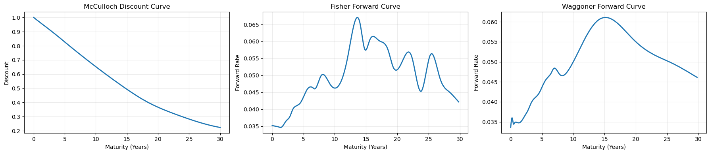

Analysis Pipeline Tour: Treasury Curve Replication#
This notebook walks through the spline method (from the Waggoner 1997 paper) replication & analysis portions of the project in a lightweight way. It covers four processes:
Prepare cleaned Treasury data for estimation via
tidy_CRSP_treasuryRun a short-slice McCulloch replication via
run_mcc_yield_curveRun a short-slice Fisher replication via
run_fisher_yield_curveRun a short-slice Waggoner replication via
run_waggoner_yield_curve
This notebook intentionally does not run the entire project pipeline, so it stays fast enough for iterative exploration.
Imports and Paths#
from pathlib import Path
import pandas as pd
import matplotlib.pyplot as plt
from IPython.display import display
import tidy_CRSP_treasury
import run_mcc_yield_curve
import run_fisher_yield_curve
import run_waggoner_yield_curve
from settings import config
ROOT = Path.cwd()
PROJECT_ROOT = ROOT if (ROOT / 'src').exists() else ROOT.parent
DATA_DIR = Path(config('DATA_DIR'))
OUTPUT_DIR = Path(config('OUTPUT_DIR'))
print('PROJECT_ROOT:', PROJECT_ROOT)
print('DATA_DIR:', DATA_DIR)
print('OUTPUT_DIR:', OUTPUT_DIR)
PROJECT_ROOT: /Users/phoebefingold/FINM_Repo/FINM_32900/p14_gurkaynak_sack_wright_2007
DATA_DIR: /Users/phoebefingold/FINM_Repo/FINM_32900/p14_gurkaynak_sack_wright_2007/_data
OUTPUT_DIR: /Users/phoebefingold/FINM_Repo/FINM_32900/p14_gurkaynak_sack_wright_2007/_output
Process 1: Prepare Estimation Input Data#
All downstream estimators share one cleaned input file: tidy_CRSP_treasury.parquet.
The data cleaning process involves:
standardizing CRSP fields
creating mid-prices and maturity fields
adding runness and sample-screen flags
writing the tidy dataset for model estimation and diagnostics
tidy_CRSP_treasury.main(DATA_DIR, DATA_DIR)
df_tidy = pd.read_parquet(DATA_DIR / 'tidy_CRSP_treasury.parquet')
print('tidy rows:', len(df_tidy))
print('date range:', pd.to_datetime(df_tidy['date']).min().date(), 'to', pd.to_datetime(df_tidy['date']).max().date())
display(df_tidy.head())
Wrote tidy CRSP Treasury data set saved to: /Users/phoebefingold/FINM_Repo/FINM_32900/p14_gurkaynak_sack_wright_2007/_data/tidy_CRSP_treasury.parquet
tidy rows: 145747
date range: 1970-01-30 to 2026-01-30
| date | cusip | kytreasno | kycrspid | issue_date | maturity_date | coupon | first_coupon_date | itype | iflwr | ... | is_under_1y | is_20y | is_20yr_post_1996 | is_bond | is_note | is_bill | is_flower | valid_quote | nonnegative_maturity | clean | |
|---|---|---|---|---|---|---|---|---|---|---|---|---|---|---|---|---|---|---|---|---|---|
| 0 | 1970-01-30 | 912793BQ | 200639.0 | 19700228.400000 | 1969-02-27 | 1970-02-28 | 0.0 | NaT | 4.0 | 1.0 | ... | True | False | False | False | False | True | False | True | True | True |
| 1 | 1970-01-30 | 912793BR | 200646.0 | 19700331.400000 | 1969-04-01 | 1970-03-31 | 0.0 | NaT | 4.0 | 1.0 | ... | True | False | False | False | False | True | False | True | True | True |
| 2 | 1970-01-30 | 912793CG | 200653.0 | 19700430.400000 | 1969-04-29 | 1970-04-30 | 0.0 | NaT | 4.0 | 1.0 | ... | True | False | False | False | False | True | False | True | True | True |
| 3 | 1970-01-30 | 912793CH | 200660.0 | 19700531.400000 | 1969-05-29 | 1970-05-31 | 0.0 | NaT | 4.0 | 1.0 | ... | True | False | False | False | False | True | False | True | True | True |
| 4 | 1970-01-30 | 912793CU | 200666.0 | 19700630.400000 | 1969-06-26 | 1970-06-30 | 0.0 | NaT | 4.0 | 1.0 | ... | True | False | False | False | False | True | False | True | True | True |
5 rows × 35 columns
Demo Window Setup:#
To keep runtime reasonable, we run each method on a short window (about 2 years)
from the latest available dates and write outputs with a demo_ prefix.
latest_date = pd.to_datetime(df_tidy['date']).max()
demo_start = latest_date - pd.DateOffset(years=2)
demo_end = latest_date
DEMO_PREFIX = 'demo_'
print('Demo window:', demo_start.date(), 'to', demo_end.date())
print('Output prefix:', DEMO_PREFIX)
Demo window: 2024-01-30 to 2026-01-30
Output prefix: demo_
Spline Method #1: McCulloch (1975)#
Fits a discount-curve representation
Produces discount/spot/forward outputs, bond fit diagnostics, and WMAE/Hit Rate metrics
run_mcc_yield_curve.main(start_date=demo_start, end_date=demo_end, output_prefix=DEMO_PREFIX)
print('Wrote demo_mcc_* artifacts')
Running McCulloch in-sample...
2024-01: 0 / 25 (0%)
Running McCulloch out-of-sample...
2024-01: 0 / 25 (0%)
Wrote McCulloch outputs to: /Users/phoebefingold/FINM_Repo/FINM_32900/p14_gurkaynak_sack_wright_2007/_data
Wrote demo_mcc_* artifacts
Spline Method #2: Fisher (1995)#
Fits a forward-curve representation with smoothing
Produces curve outputs, lambda/fit diagnostics, and error metrics
run_fisher_yield_curve.main(start_date=demo_start, end_date=demo_end, output_prefix=DEMO_PREFIX)
print('Wrote demo_fisher_* artifacts')
Running Fisher in-sample...
2024-01: 0 / 25 (0%)
Running Fisher out-of-sample...
2024-01: 0 / 25 (0%)
Wrote Fisher outputs to: /Users/phoebefingold/FINM_Repo/FINM_32900/p14_gurkaynak_sack_wright_2007/_data
Wrote demo_fisher_* artifacts
Spline Method #3: Waggoner (1997)#
Fits a flexible forward-curve specification
Produces curve outputs, fit diagnostics, and error metrics
run_waggoner_yield_curve.main(start_date=demo_start, end_date=demo_end, output_prefix=DEMO_PREFIX)
print('Wrote demo_waggoner_* artifacts')
Running Waggoner in-sample...
2024-01: 0 / 25 (0%)
Running Waggoner out-of-sample...
2024-01: 0 / 25 (0%)
Wrote Waggoner outputs to: /Users/phoebefingold/FINM_Repo/FINM_32900/p14_gurkaynak_sack_wright_2007/_data
Wrote demo_waggoner_* artifacts
Representative Metric Tables (Demo Runs)#
Below we preview in-sample and out-of-sample error summaries for the demo-window runs.
metric_files = {
'MCC (IS)': DATA_DIR / 'demo_mcc_error_metrics.csv',
'MCC (OOS)': DATA_DIR / 'demo_mcc_oos_error_metrics.csv',
'Fisher (IS)': DATA_DIR / 'demo_fisher_error_metrics.csv',
'Fisher (OOS)': DATA_DIR / 'demo_fisher_oos_error_metrics.csv',
'Waggoner (IS)': DATA_DIR / 'demo_waggoner_error_metrics.csv',
'Waggoner (OOS)': DATA_DIR / 'demo_waggoner_oos_error_metrics.csv',
}
frames = []
for label, path in metric_files.items():
if path.exists():
tmp = pd.read_csv(path)
tmp['spec'] = label
frames.append(tmp)
if frames:
all_metrics = pd.concat(frames, ignore_index=True)
display(all_metrics.head(12))
summary = (
all_metrics.loc[all_metrics['bucket'].astype(str).str.lower() == 'all']
[['spec', 'wmae', 'hit_rate']]
.sort_values('wmae')
.reset_index(drop=True)
)
display(summary)
else:
print('No demo metrics files found.')
| bucket | wmae | hit_rate | spec | |
|---|---|---|---|---|
| 0 | 0-1 | 0.009623 | 0.114019 | MCC (IS) |
| 1 | 1-3 | 0.033557 | 0.380247 | MCC (IS) |
| 2 | 3-5 | 0.041631 | 0.352941 | MCC (IS) |
| 3 | 5-10 | 0.085360 | 0.183471 | MCC (IS) |
| 4 | >10 | 0.148715 | 0.194043 | MCC (IS) |
| 5 | All | 0.022471 | 0.264308 | MCC (IS) |
| 6 | 0-1 | 0.009760 | 0.128253 | MCC (OOS) |
| 7 | 1-3 | 0.035812 | 0.345395 | MCC (OOS) |
| 8 | 3-5 | 0.049008 | 0.328000 | MCC (OOS) |
| 9 | 5-10 | 0.087539 | 0.181049 | MCC (OOS) |
| 10 | >10 | 0.175857 | 0.176895 | MCC (OOS) |
| 11 | All | 0.024055 | 0.246966 | MCC (OOS) |
| spec | wmae | hit_rate | |
|---|---|---|---|
| 0 | Waggoner (IS) | 0.018069 | 0.316314 |
| 1 | Waggoner (OOS) | 0.019720 | 0.287176 |
| 2 | Fisher (IS) | 0.019829 | 0.371408 |
| 3 | Fisher (OOS) | 0.022128 | 0.300738 |
| 4 | MCC (IS) | 0.022471 | 0.264308 |
| 5 | MCC (OOS) | 0.024055 | 0.246966 |
Representative Method Plots (Demo Runs)#
We create quick representative curve plots directly from the demo output files.
demo_curve_files = {
'McCulloch': DATA_DIR / 'demo_mcc_discount_curve.parquet',
'Fisher': DATA_DIR / 'demo_fisher_forward_curve.parquet',
'Waggoner': DATA_DIR / 'demo_waggoner_forward_curve.parquet',
}
for label, path in demo_curve_files.items():
print(label, path.name, 'exists:', path.exists())
McCulloch demo_mcc_discount_curve.parquet exists: True
Fisher demo_fisher_forward_curve.parquet exists: True
Waggoner demo_waggoner_forward_curve.parquet exists: True
fig, axes = plt.subplots(1, 3, figsize=(18, 4), sharex=False)
for ax, (label, path) in zip(axes, demo_curve_files.items()):
if not path.exists():
ax.set_title(f'{label}: missing file')
ax.axis('off')
continue
df_curve = pd.read_parquet(path)
dmax = pd.to_datetime(df_curve['date']).max()
snap = df_curve.loc[pd.to_datetime(df_curve['date']) == dmax].copy()
xcol = 't' if 't' in snap.columns else 'T'
if label == 'McCulloch':
x = snap[xcol]
y = snap['discount']
ylab = 'Discount'
title = f'{label} Discount Curve'
else:
x = snap[xcol]
y = snap['forward']
ylab = 'Forward Rate'
title = f'{label} Forward Curve'
ax.plot(x, y, linewidth=2)
ax.set_title(title)
ax.set_xlabel('Maturity (Years)')
ax.set_ylabel(ylab)
ax.grid(alpha=0.25)
plt.tight_layout()
plt.show()

How This Maps to the Full Pipeline#
This lightweight notebook is for method walkthrough and representative diagnostics.
For full production artifacts (replication tables, cross-method correlations, report-ready figures),
run the doit tasks in dodo.py directly.
required = [
DATA_DIR / 'tidy_CRSP_treasury.parquet',
DATA_DIR / 'demo_mcc_error_metrics.csv',
DATA_DIR / 'demo_fisher_error_metrics.csv',
DATA_DIR / 'demo_waggoner_error_metrics.csv',
]
check = pd.DataFrame(
{
'artifact': [str(p.relative_to(PROJECT_ROOT)) if p.is_relative_to(PROJECT_ROOT) else str(p) for p in required],
'exists': [p.exists() for p in required],
}
)
display(check)
print('All lightweight demo artifacts exist:', bool(check['exists'].all()))
| artifact | exists | |
|---|---|---|
| 0 | _data/tidy_CRSP_treasury.parquet | True |
| 1 | _data/demo_mcc_error_metrics.csv | True |
| 2 | _data/demo_fisher_error_metrics.csv | True |
| 3 | _data/demo_waggoner_error_metrics.csv | True |
All lightweight demo artifacts exist: True